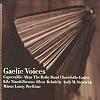

Celtic Lyrics Corner > Compilations > Gaelic Voices
|  |
Gaelic Voices
(1999) |
| Tracks : |
1.
Laill Leathag
- Sìleas
2. Dónal Agus Mórag - Altan 3. Fionnghuala - The Bothy Band 4. Puirt A Beul - Capercaillie 5. Tóg É Go Bog É - Kíla 6. Síle - Reeltime 7. Moll Dubh A'Ghleanna - Altan 8. Siún Ní Dhuibhir - Relativity 9. A Neansaí Mhíle Grá - Cherish The Ladies 10. Alasdair Mhic Cholla Ghasda - Capercaillie 11. Brid Óg Ní Mháille - Andy M. Stewart & Mánus Lunny 12. Fear A Bhata - Niamh Parsons 13. Gile Mear - Relativity 14. Pi Li Li Liu - Sìleas |